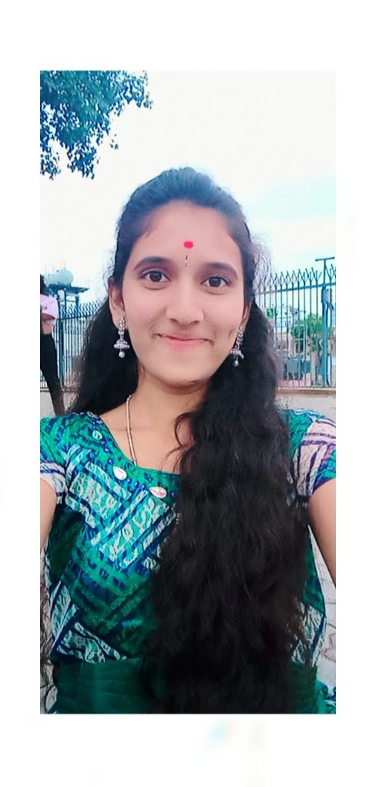

Biodata of Sumithra
My name is Sumithra
I am from Punganur.

Bacheor of degree
I have completed my graduation in Sri padmavathi womens degree college .
I have finished my Bacholeor of computer Sceince in 2022 with 90%
InterMediate
I completed my intermediate in vani college.
I scored 9.94 points in intermediate
Listening music
Dancing
Travelling
Desinging and drawing
;
After Graduation
When im in college I got great oppurtunity to join to The joining the dots (JTD) Foundation which gave me life. It is the place to fill my dream job colorfull . I lost my confidence level when I was in college, because there was no sufficient facilities to get into job and survive. But when we are seeking for the help ,Suddenly one day JTD came to our college and have given chance to join into it. And jtd provided the laptops for each and everyone of us. They provided us whatever the facilities we need.